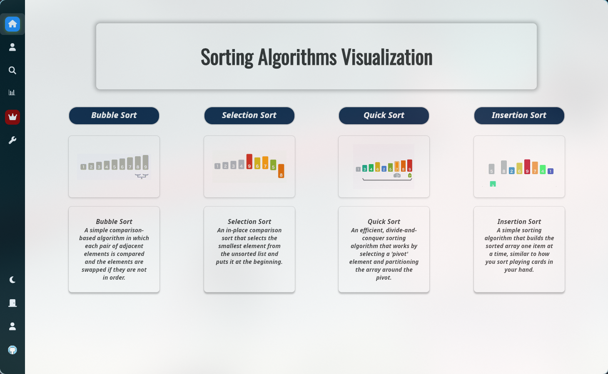
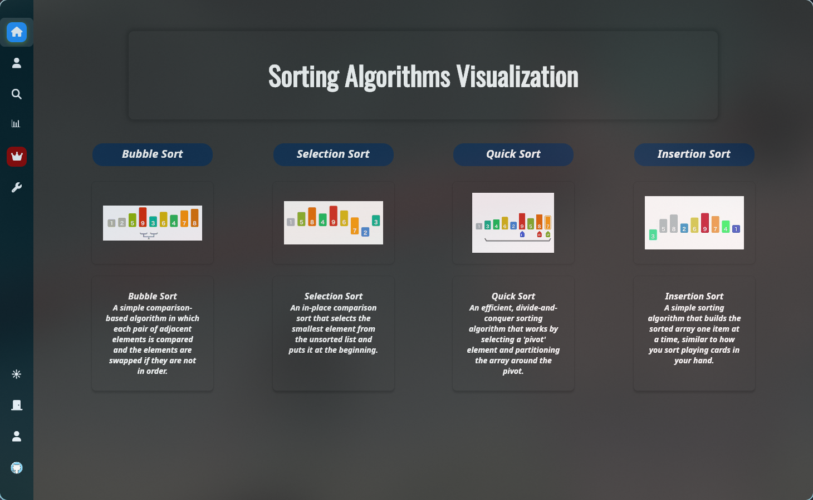

Що таке SortProgram?
SortProgram - це інтерактивний додаток, розроблений для того, щоб зробити вивчення алгоритмів сортування простим та наочним. Візуалізуйте кожен крок, порівнюйте різні підходи та поглиблюйте свої знання в інформатиці.

